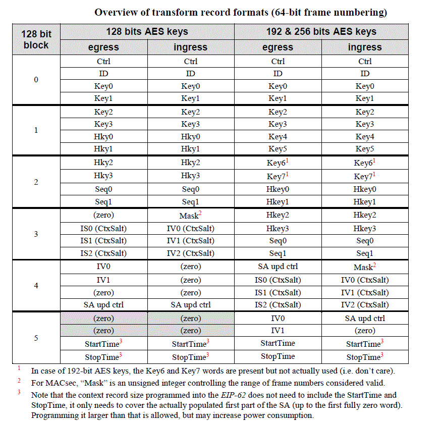
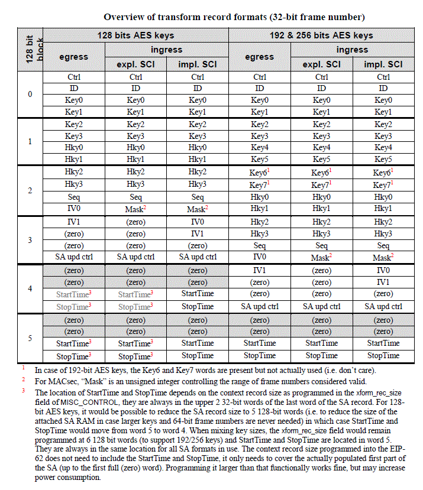
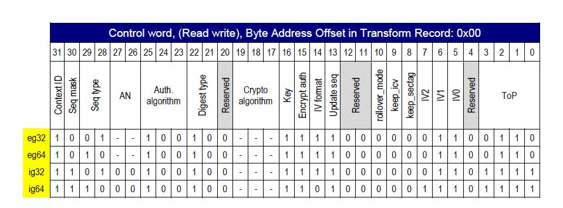

Introduction
The Broadcom IMACSec API consists of a set of APIs which can be used to configure IMACSec functionality for Broadcom devices that support IMACSec feature. All supported API calls are documented in this manual. Functions not defined in this document are NOT API calls and subject to change or removal at any time in any release. Functions defined in this document are intended, as much as reasonably possible, to be carried forward and supported on all platforms.
All IMACSec API identifiers have prefix imacsec_plp_base_t_.
The API exports silicon features in a device independent manner as much as possible, but does not implement in software those functions that the underlying devices do not support.
IMACSec as such is a Port feature and most of the Broadcom APIs are designed around that. Port APIs control the IMACSec features at the port level. For example Port API will control whether or not the IMACSec feature is enabled or not enabled for the port, so on. For the port that supports IMACSec feature, it can have certain number of IMACSec secure channels, Secure channel APIs provide the means to create/update/remove secure channels on the port. For a specified secure channel, there can be certain number of Secure Associations which belong to the Secure channel. IMACSec secure association API provides the means to create/update/remove IMACSec Secure Associations. Broadcom devices provide flexible packet parse engine which can be controlled though the IMACSec flow APIs. These APIs provide the means to create/update/remove rules for SA to perform macsec transform. These APIs can be used for classifying the traffic to either belong to IMACSec controlled or uncontrolled port or by-pass IMACSEC or to perform various actions like Dropping packets when hardware detects various error conditions in the packet etc.
Most of the IMACSec APIs take unit and port parameters which identify the port on BCM switch device. The parameter macsec_side is used to identify egress or ingress Note: MDIO address for macsec device is provided by the user in config file. This is calculated based on phy chip base address and number of lane supported e.g. For BCM54190: macsec_dev_addr = BASE_PHY_ADDR[0] + 9 For BCM54194: macsec_dev_addr = BASE_PHY_ADDR[0] + 5 There is one exception for BCM54194 chip if system side interface is QSGMII macsec_dev_addr = BASE_PHY_ADDR[0] + 9
API Usage Guide
IMACSEC Software package is delivered separately to SDK. If customer wish to use this feature they need to contact Broadcom marketing team to get this package.
Package information
- List of key files
- How to Compile
- An example of how to write a sample program to access plp_phy_driver software driver library using SDK IMACSEC APIs
- How to access documentation
List of key files
- README - This is README file
- ReleaseNote.txt - List of changes between current releases to previous release version
- bcm_plp_base_t_sec - SecY Interface functionalities
- imacsec - SecY source
- doc - Documentation (using Doxygen)
- <chip>_reference_app - Sample application to access phy chip
- Makefile - Makefile provides 'build' and 'clean' the targets
The whole package is delivered as tgz file e.g. IMACSEC_<Y>_<Z>.tgz
How to Compile
To compile, unpack it to a directory
To Unpack
tar -zxvf IMACSEC_<Y>_<Z>.tgz
It requires Broadcom SDK package to compile this package . SDK FAE should be consulted for further information on SDK package.
In SDK environment, set IMACSEC software path:
setenv IMACSEC_HOME <your_path>/IMACSEC_<Y>_<Z>
run make command inside SDK path ($SDK) for the host desired. For example:
cd $SDK/system/linux/user/gto
make
An example of how to write a sample program
i) SDK provides wrapper APIs to access plp_phy_driver software library.
ii) Wrapper APIs are located in $SDK/src/soc/phy/imacsec/bcm_imacsec.h
iii) Application has to include bcm_imacsec.h header file to use the wrapper APIs.
iv) Sample application is provided under <chip>_reference_app for reference.
How to access documentation
For internal API details refer to HTML file provided in the documentation directory (doc/html/index.html). SDK wrapper APIs which application will use is mentioned as below with prefix imacsec_plp_base_t_.
SecY SA Data Structure
SecY SA data structure that contains data required to add a new SA.
sa_word_count Size of the transform record (transform_record_p) associated with SA in 32-bit words. transform_record_p Pointer to the transform record data. All fields of the transform record must be populated by the Host software before the corresponding SA flow can be enabled. For bypass and drop flows, the transform record is not used. For MACsec transformations, the hardware only updates the sequence number field; it will not modify the other fields during MACsec egress and ingress processing. Transform record has fixed layout for all supported MACsec use cases. Note: The unused bytes at the end of the record must be written with zeroes.
Transform record format 24 * 32 bits


The following fields must be written with zeroes when not used: Key4 - Key7 fields, if cipher key is 128-bit long Seq1 and IS0-S2, if 32-bit packet numbering is used
Context ID word The following fields of the transform record store the parameters needed for cryptographic transformations:

The context control word is the first 32-bit word in each transform record. It specifies the type of operation. Only those settings that are relevant for MACsec operations need to be defined. The bit field diagram shows four rows of bit settings: two upper rows for egress operation and two lower rows for ingress operation: 1.The 1st row is for egress operations with 32-bit frame numbering (hex base value 0x924BE066, 0x924DE066 or 0x924FE066 for 128, 192 and 256-bit AES key respectively) with as variable part the 2-bit association number (AN), which should be shifted left over 26 bits and added to that base value.
- The 2nd row is for egress operations with 64-bit frame numbering (hex base value 0xA24BE066, 0xA24DE066 or 0xA24FE066 for 128, 192 and 256-bit AES key respectively) with as variable part the 2-bit association number (AN), which should be shifted left over 26 bits and added to that base value.
- The 3rd row is for ingress operations with 32-bit frame numbering (hex value 0xD24BE06F, 0xD24DE06F or 0xD24FE06F for 128, 192 and 256-bit AES key respectively) with no variable fields.
- The 4th row is for ingress operations with 64-bit frame numbering (hex value 0xE24BA0EF, 0xE24DA0EF or 0xE24FA0EF for 128, 192 and 256-bit AES key respectively) with no variable fields.
"multi_row">Context control word 32 bit table</caption>
| Bits | Name | Description |
| [3:0] | ToP | Type of packet: the only valid values are 0110b for egress and 1111b for ingress |
| [4] | Reserved | Write with zero and ignore on read |
| [5] | IV0 | First word of IV present in context (is SCI for MACsec). Value depends on direction and presence of 64-bit packet numbering |
| [6] | IV1 | Second word of IV present in context (is SCI for MACsec). Value depends on direction and presence of 64-bit packet numbering |
| [7] | IV2 | Third word of IV present in context. Value depends on direction and presence of 64-bit packet numbering |
| [8] | Reserved | Write with zero and ignore on read |
| [9] | Reserved | Write with zero and ignore on read |
| [10] | Rollover_mode | Egress:1b = When nextPN reaching all 1's, it rolls over to value '1' without sequence number error generated. Ingress: 1b = When packet is received with PN equal to all 1's, Sequence number field in transform record becomes '0'. This allows receiving and accepting packets with PN starting with value '1'.Key4 |
| [18-11] | Reserved | Write with zero and ignore on read |
| [13] | Update seq | Update sequence number. Must be set to 1b for MACsec. |
| [14] | IV Format | If set, use sequence number as part of IV. Value depends on direction and presence of 64-bit packet numbering. |
| [15] | Encrypt auth | If set, encrypt ICV. Must be set to 1b for MACsec. |
| [16] | Key | Load crypto key from context. Must be set to 1b for MACsec. |
| [19-17] | Crypto algorithm | Algorithm for data encryption. 101b - AES-CTR-128, 111b - AES-CTR-256. The other values are reserved |
| [20] | Reserved | Write with zero and ignore on read |
| [22-21] | Digest type | Type of digest key. Only single digest key is supported, setting 10b. |
| [25-23] | Auth algorithm | Algorithm for authentication. Only AES-GHASH is supported, setting 100b. |
| [27-26] | AN | The two-bit Association Number, which will be inserted into the SecTag for egress operations. Must be kept 00b for ingress |
| [29-28] | Seq type | Type of sequence number: 01b - for 32-bit sequence number, 10b - for 64-bit sequence numbeKey5 |
| [30] | Seq mask | Sequence mask is present in context: set to 1b for ingress, set to 0b for egress. |
| [31] | Context ID | Context ID present: must be set to 1b. |
Context ID word This is a unique identifier for each context. In the EIP-164 it is sufficient to give all transform records a different context ID, possibly be assigning them a number from 0 to maximum index
Cryptographic parameters The following fields of the transform record store the parameters needed for cryptographic transformations:
Key 0 - Key 7
This is the AES encryption key for the MACsec SA. Each word of the key is a 32-bit integer representing four bytes of the key in little-endian order. The number of words is fixed regardless of operation. The unused 32-bit words must be filled with zeroes. Example: if the AES key is 128-bit long: 00_11_22_33_44_55_66_77_88_99_AA_BB_CC_DD_EE_FF, Key 0 = 0x33221100 Key 1 = 0x77665544 Key 2 = 0xBBAA9988 Key 3 = 0xFFEEDDCC
HKey 0 - HKey 3 This is a 128-bit key for the authentication operation. It is represented in the same byte order as Key 0...Key 7. It is derived from Key 0...Key 7 as follows: H_key=E(Key, 0128). This means performing a 128-bit AES-ECB block encryption operation with Key 0...Key 7 as the key and a block of 128 zero bits as the plaintext input. The cipher-text result of the AES block encryption is the 128-bit H_Key. Usage of the following fields depends on the direction and selection of extended packet numbering. All egress transform records and ingress transform records, contain an SCI, placed at the IV0 and IV1 fields. For ingress with 64 bit packet numbering the SCI is not needed in the transform record because it is not part of any operation
IV0 and IV1 (SCI 0 and SCI 1) This is the SCI that belongs to the specific MACsec SA. Even in modes that do not explicitly transmit or receive the SCI with each packet, an SCI is defined, which depends on the source MAC address and the ES and SCB bits. It is a 64-bit block, represented by two 32-bit integers in little-endian order. This is the same byte order in which SAM_SCI_MATCH_HI/SAM_SCI_MATCH_LO represent an SCI.
Example: the SCI is 00_01_02_03_04_05_06_07 (hexadecimal). Then: SCI 0 = 0x03020100 SCI 1 = 0x07060504
IS0, IS1 and IS2 (CtxSalt) The egress and ingress transform records with 64-bit packet numbering also contain a 96-bit CtxSalt. This is a 96-bit Salt as described in IEEE 802.1AEbw but with the most significant 32-bits are XOR-ed with the SSCI field. This makes the actual IV for the 32 MSB. For the 64 LSB, the EIP-164 only needs to perform an XOR of the lower 64-bits of the CtxSalt with the 64-bit packet number to get the IV. Example: The Salt is E6_30_E8_1A_48_DE_86_A2_1C_66_FA_6D. The SSCI is 7A_30_C1_18 Then the CtxSalt is: 9C_00_29_02_48_DE_86_A2_1C_66_FA_6D
The CtxSalt is placed at IS0-S2 as following: IS0: 0x0229009C (Salt XOR-ed with SSCI) IS1: 0xA286DE48 (Salt) IS2: 0x6DFA661C (Salt)
Packet numbering and replay check The following fields are used to control MACsec packet number processing: Sequence Number (Seq0 for 32-bit packet number, Seq0/1 for 64-bit packet number):
For egress MACsec this is one less than the sequence number (PN) that is to be inserted into the MACsec frame. For a new SA to generate the first MACsec packet with PN=1 this must be initialized to 0. After each egress packet, this field is incremented by 1. If it rolls over from 0xFFFFFFFF to '0' (0xFFFFFFFF_FFFFFFFF to 0 for 64-bit packet numbering), a sequence number error will occur and the context will not be updated. This event is a trigger to update the flow control word pointing to the current SA. For ingress MACsec the Sequence Number should be initialized to 1.
Mask (replay window size): This specifies the window size for ingress sequence number checking. Value 0 is enforced for strict ordering For inbound frames, the EIP-164 supports both 32-bit and 64-bit packet numbering. Replay checking for these modes is different When performing replay checking for 32-bit packet numbers, the PN is compared against the sequence number (PN) from the context, resulting in one of the following three cases.
- If the received number is greater or equal to the number in the context: received_PN >= next_PN In this case, the context sequence number (PN) is updated (if the Update seq bit is set to 1b). The updated value is the received number plus one.
- If the received number is below the number from the context, but within the greplayWindow: received_PN < next_PN received_PN >= (next_PN - replayWindow) In this case, no context update is required.
- If the received number is below the number from the context, and outside the greplayWindow: received_PN < (next_PN - replayWindow) In this case, the sequence number check fails and error bit e10 is set in the result token. No context update is done
When performing replay checking for 64-bit packet numbers, the lower 32-bits of the packet number are retrieved from the packet and the upper 32-bits are recovered (estimated) based on replay check window size and full 64-bit value (the highest packet number that was correctly recovered for the correctly processed packet, incremented with 1). This value is stored in the transform record (sequence number field).
Attention: According to IEEE 802.1AEbw, if extended packet numbering is used, the value of the replay window should not exceed 230, even if network management software sets it to a higher value. Software must ensure that such a higher value is not programmed in the transform record.
Attention: For 32-bit packet numbering, this value can be up to 23^32-1, in which case any nonzero sequence number is accepted.
Note: When the sequence number of an egress SA is about to roll over, it must be replaced by a new SA with different keys. It is not allowed to reset the Sequence Number of an egress SA to a lower value - doing so will (in general) lead to Sequence Number checking failures at the receiving end of the connection.
SA update control word For automatic SA expiry (all directions) and switching (egress-only MACsec), the transform record contains an SA update control word that controls SA update when the packet number for the current SA is expired.
SA update control word
| Bits | Name | Description |
| [13-0] | sa_index | Egress: Index of the next SA. This index is valid only if sa_index_valid is set to 1b. Ingress: Index of the current SA. This value is used to set bit in the SA_EXP_SUMMARY register. |
| [14] | sa_expired_irq | When set to 1b, allows annotation into the SA expired summary register and generates a subsequent interrupt when the SA expires. For the egress processing, this is performed regardless whether the next SA is available. When set to 0b, no annotation in the SA expired summary register is done. Note: This field is valid only if update_en set to 1bWrite with zero and ignore on read |
| [15] | sa_index_valid | Egress: Next SA index valid. When set to 1b, indicates that the sa_index field contains a valid index pointing to the installed transform record. If the next SA is not installed yet, this field must be set to 0b. If the next SA was not installed in time and the current SA expired, the SA is invalidated and an SA expired interrupt is generated along with a flag set in the SA expired summary register. Ingress: Must be to zero becase on ingress processing only expiration can be performed |
| [28:16] | sc_index | Egress: Index of the TxSC for the current SA. If SA switching is successful, it gets the next SA index. Ingress: Index of the RxSC for the current SA |
| [30:29] | sa_an | Egress: Must be to zero. Ingress: AN number of the SA |
| [31] | update_en | Egress: SA index update enable. If set to 1b, enables the SA index update when the Packet Number for the current transform record has expired. The current SA index in the corresponding flow control register is updated with the sa_index if sa_index_valid is 1b. If sa_index_valid is 0b, the SA is invalidated by setting the value of the sa_in_use field to 0b in the flow control register. Ingress: SA expiration enable. If set to 1b, enables the automatic inUse flag clearing when the Packet Number for the current transform record has expired |
| API | Brief |
| imacsec_plp_base_t_secy_init() | Initializes a SecY device instance identified by macsec_side parameter |
| imacsec_plp_base_t_secy_vport_add() | Adds a new vPort (vPort policy) for one classification device instance |
| imacsec_plp_base_t_secy_vport_remove() | Removes an already added vPort (vPort policy) from one classification device |
| imacsec_plp_base_t_secy_uninit() | Uninitializes a SecY device instance identified by macsec_side parameter |
| imacsec_plp_base_t_secy_sa_add() | Adds a new SA for a SecY device instance identified by macsec_side parameter |
| imacsec_plp_base_t_secy_sa_update() | Updates SA flow parameters for an already added SA for a SecY device instance |
| imacsec_plp_base_t_secy_sa_read() | Reads (part of) a transform record of an already added SA from a SecY device instance |
| imacsec_plp_base_t_secy_sa_remove() | Removes a previously added SA from a SecY device instance |
| imacsec_plp_base_t_secy_rule_add() | Adds a new rule for matching a packet to a vPort identified by vport_handle |
| imacsec_plp_base_t_secy_rule_remove() | Removes an already added rule from one classification device instance |
| imacsec_plp_base_t_secy_rule_update() | Updates a packet matching rule for one classification device instance |
| imacsec_plp_base_t_secy_rule_enable() | Enables an already added rule for one classification device instance |
| imacsec_plp_base_t_secy_rule_disable() | Disables an already added rule for one classification device instance |
| imacsec_plp_base_t_secy_rule_enable_disable() | Enables and/or disables an already added rule from one classification device instance |
| imacsec_plp_base_t_version_get() | Gets the IMACSEC software version information |
| imacsec_plp_addr_read() | Reads the register address using mdio bus |
| imacsec_plp_addr_write() | Writes the register address using mdio bus |
| imacsec_plp_base_t_secy_sa_chain() | Adds a new SA transform record and chain it to the current active SA. |
| imacsec_plp_base_t_secy_sa_switch() | Manually switch to the new SA from the current active SA. |
| imacsec_plp_base_t_secy_device_limits() | Returns the maximum number of rules, vPorts, Security Associations (SAs) and/or Secure Channels (SCs) of the XtSecY device instance identified by DeviceId parameter. |
| imacsec_plp_base_t_secy_vport_handle_issame() | Check whether provided Handle1 is equal to provided Handle2. |
| imacsec_plp_base_t_secy_sa_handle_issame() | Check whether the provided Handle1 is equal to provided Handle2. |
| imacsec_plp_base_t_secy_sa_handle_sa_index_issame() | Check whether the provided Handle points to the same SA as the provided SA index. |
| imacsec_plp_base_t_secy_sa_nextpn_update() | Updates the NextPN field for an inbound SA. |
| imacsec_plp_base_t_secy_device_update() | This function updates the SecY device control settings. |
| imacsec_plp_base_t_secy_crypt_auth_bypass_len_update() | Updates the length of the bypass data during crypt-authenticate operation for a SecY device identified by macsec_side. The bypass data should contain MAC header to be able to classify the packet into the corresponding crypto-authenticate flow control register and additionally it might include the IV used in the transformation. |
| imacsec_plp_base_t_secy_rules_mtu_check_update() | Updates rule for outbound MTU checks. |
| imacsec_plp_base_t_secy_rule_handle_issame() | Check whether provided Handle1 is equal to provided Handle2. |
| imacsec_plp_base_t_secy_sa_index_get() | Get the SA index from an SA, using the SA handle. |
| imacsec_plp_base_t_secy_rule_index_get() | Gets the Rule index from a Rule, using the Rule handle. |
| imacsec_plp_base_t_secy_vport_index_get() | Gets the vPort index from an vPort, using the vPort handle. |
| imacsec_plp_base_t_secy_sa_handle_get() | Get the SA handle from an SA, using the SA index. |
| imacsec_plp_base_t_secy_rule_handle_get() | Gets the Rule handle from a Rule, using the Rule index |
| imacsec_plp_base_t_secy_vport_handle_get() | Gets the vPort handle from an vPort, using the vPort index. |
| imacsec_plp_base_t_secy_tcam_statistics_get() | This function reads the TCAM device statistics. |
| imacsec_plp_base_t_secy_rxcam_statistics_get() | Reads RxCAM statistics (ingress only) from a SecY device instance identified by macsec_side parameter. |
| imacsec_plp_base_t_secy_secy_statistics_i_get() | Reads ingress SecY statistics from a SecY device instance identified by macsec_side parameter. |
| imacsec_plp_base_t_secy_secy_statistics_e_get() | Reads egress SecY statistics from a SecY device instance identified by macsec_side parameter. |
| imacsec_plp_base_t_secy_sa_statistics_i_get() | Reads ingress SA statistics from a SecY device instance identified by macsec_side parameter. |
| imacsec_plp_base_t_secy_sa_statistics_e_get() | Reads ingress SA statistics from a SecY device instance identified by macsec_side parameter. |
| imacsec_plp_base_t_secy_global_statistics_get() | This function reads the Global device statistics. |
| imacsec_plp_base_t_secy_ifc_statistics_e_get() | Reads egress interface statistics from a SecY device instance identified by macsec_side parameter. |
| imacsec_plp_base_t_secy_ifc_statistics_i_get() | Reads ingress interface statistics from a SecY device instance identified by macsec_side parameter. |
| imacsec_plp_base_t_secy_device_count_summary_pifc_checkandclear() | Reads the values for Per-IFC count summary registers and clears the bits that are set by hardware. Each bit represents an IFC (interface) that has a statistics counter that crossed the threshold. |
| imacsec_plp_base_t_secy_device_count_summary_prxcam_checkandclear() | Reads the values for Per-RxCAM count summary registers and clears the bits that are set by hardware. Each bit represents an RxCAM hit counter that has crossed the threshold. |
| imacsec_plp_base_t_secy_device_count_summary_psa_checkandclear() | Reads the values for Per-SA expired summary registers and clears the bits that are set by hardware. Each bit represents a SA that has a statistics counter that crossed the threshold. |
| imacsec_plp_base_t_secy_device_count_summary_psecy_checkandclear() | Reads the values for the Per-SecY count summary registers and clears the bits that are set by hardware. Each bit represents a SecY that has a statistics counter that crossed the threshold. |
| imacsec_plp_base_t_secy_device_count_summary_ptcam_checkandclear() | Reads the values for Per-TCAM count summary registers and clear the bits that are set by hardware. Each bit represents an TCAM that has a statistics counter that crossed the threshold. |
| imacsec_plp_base_t_secy_device_count_summary_sa_checkandclear() | Reads the value of a SA statistics summary register and clears the bits that are set by hardware. Each bit represents a SA statistics counter. If the bit is set, it indicates that the corresponding counter has crossed the set threshold. |
| imacsec_plp_base_t_secy_device_count_summary_secy_checkandclear() | Reads the value of a SecY counter summary register and clears the bits that are set by hardware. Each bit represents a SecY statistics counter. If the bit is set, it indicates that the corresponding counter has crossed the set threshold. |
| imacsec_plp_base_t_secy_device_count_summary_tcam_global_checkandclear() | Reads the value of the TCAM global counter summary register and clears the bits that are set by hardware. Each bit represents an TCAM statistics counter. If the bit is set, it indicates that the corresponding counter has crossed the set threshold. |
| imacsec_plp_base_t_secy_device_count_summary_ifc_checkandclear() | Reads the value of a IFC counter summary register and clears the bits that are set by hardware. Each bit represents an IFC statistics counter. If the bit is set, it indicates that the corresponding counter has crossed the set threshold. |
| imacsec_plp_base_t_secy_sa_expired_summary_checkandclear() | Reads the values for SA expired summary registers and clears the bits that are set by hardware. Each bit tells if one SA expired. |
| imacsec_plp_base_t_secy_sa_pnthr_summary_checkandclear() | Reads the values for SA packet number threshold summary registers and clears the bits that are set by hardware. Each bit tells if one SA processed more packets than the threshold set. |
| imacsec_plp_base_t_secy_intr_enable_set() | This API is used to enable SecY interrupts for specified events resulting in interrupts. |
| imacsec_plp_base_t_secy_intr_enable_get() | This API is used to get enabled SecY interrupts events resulting in interrupts |
| imacsec_plp_base_t_secy_intr_status_get() | This API is used to get the status of enabled SecY interrupts |
| imacsec_plp_base_t_secy_intr_status_clear() | This API clears enabled interrupts status of SecY interrupts for specified interrupt |
| imacsec_plp_base_t_secy_event_status_get() | This API is used to get raw status of all events |
| imacsec_plp_base_t_secy_build_transform_record() | Construct the SA record for the operation described in params in a memory buffer sa_buffer_p. |